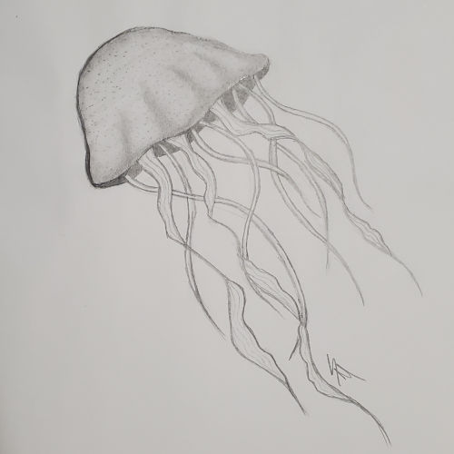
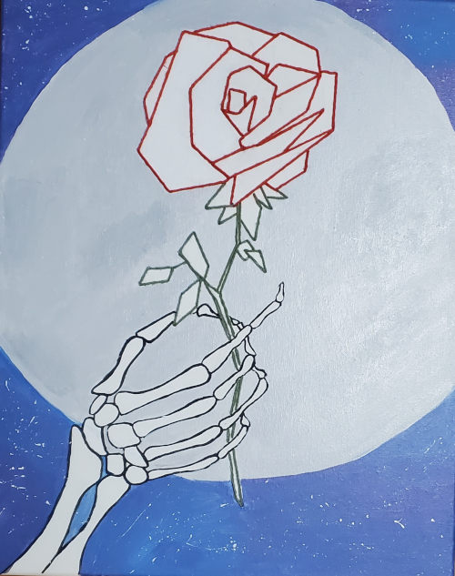
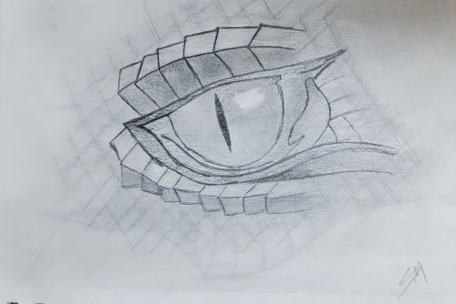
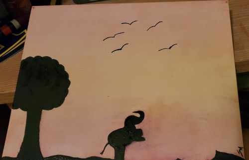
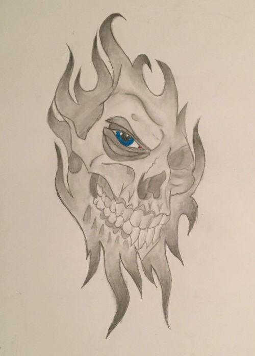
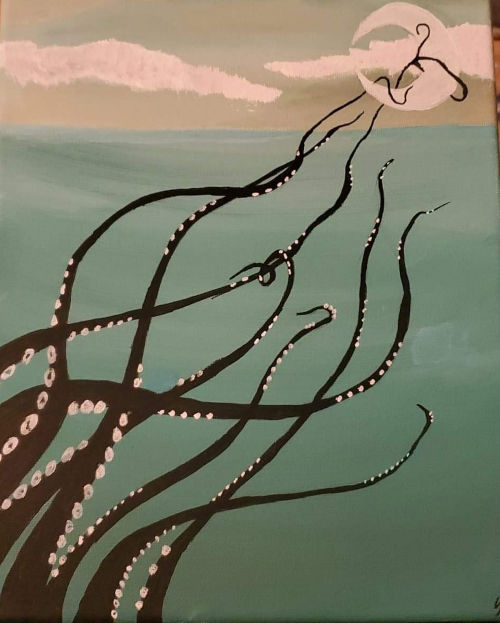
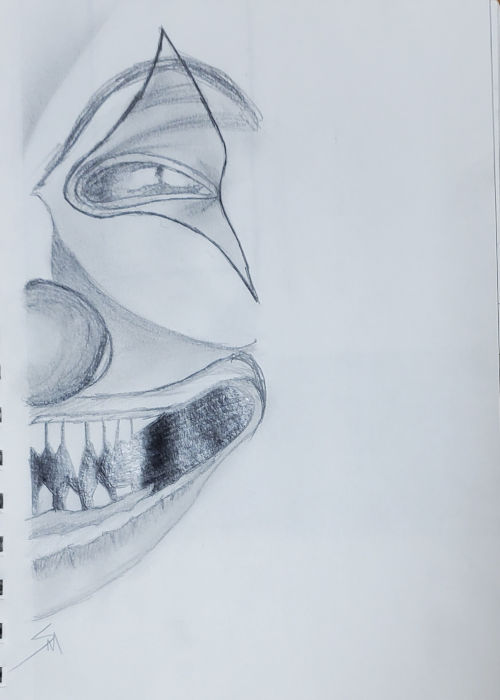
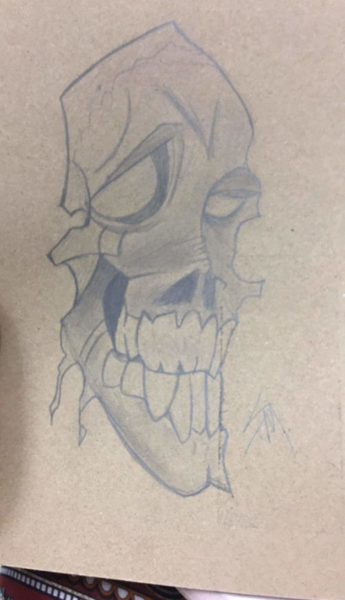
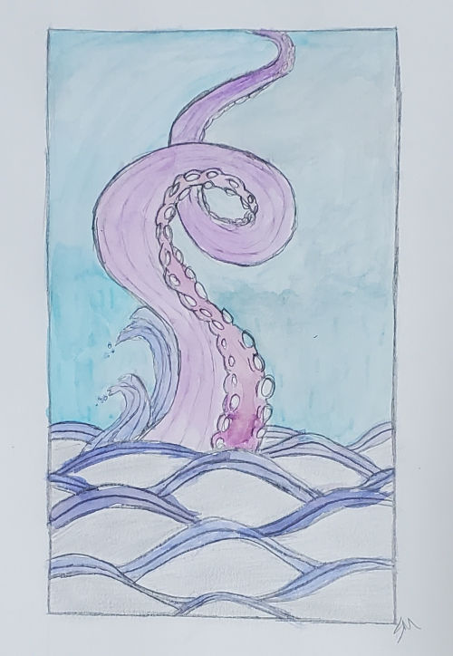
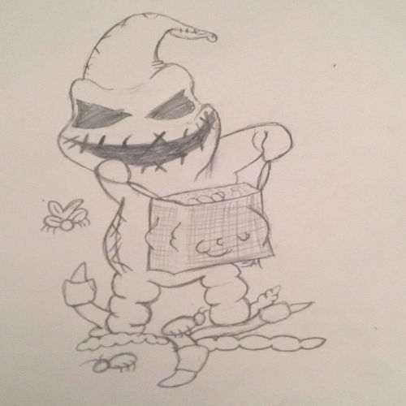

I mainly drew this as a practice piece but it is now one of my favorite pieces. It's simple but still beautiful.

The GiftThis was a project for one of my art classes. I really love roses and skeletons, so I just combined my favorite things.

Dragon's EyeI drew this because I love mythological creatures and dragons are wonderful and good inspiration pieces.

Elephant's SkyThis piece was actually done for my sister who absolutely loves elephants so she was basically my inspiration for this piece. Also this piece has been done with watercolors paints which is not usually what I do.

Fire SkullThis is actually a tattoo design that I did for my step-dad. He loves skulls and such most of his tattoos are like that so he was my inspiration for that piece. He actually does have it as a tattoo now.

The KrakenI love everything about the sea and the moon so the painting was originally just going to be water and the moon but it needed more, thus leading to the adding of the kraken. It gives a spooky vibe to the piece in my opinion. It is my dads favorite piece that I have done.

The clownSo the inspiration for this piece was actually the movie It and not the new one the old one. I did what I thought would be a scary clown to just plain look at. It's a neat piece and honestly one of my favorites.

"The Old Man Skull"I call this one the old man skull because to me that's what it looks like. Now the toned paper it's one it actually the back of a notebook. I drew that in class one day. It was a really fun piece to do.

"The Lonely Octopus"
I dont know why I chose that name for this piece but it just seemed to fit. This piece may look like it was done with watercolors but in fact it was not. I took some markers I had, drew a little on the page and then took a wet paint brush to it. I really love that technique. I really like this piece.

"Kid Oogie Boogie"
One of my favorite movies of all time is the Nightmare Before Christmas. Oogie Boogie isn't my favorite character but he is definitely up there. I thought it would be cool if I took Oogie Boogie and made him a kid that is trick or treating. So that's what this piece is, just a fun little thing.